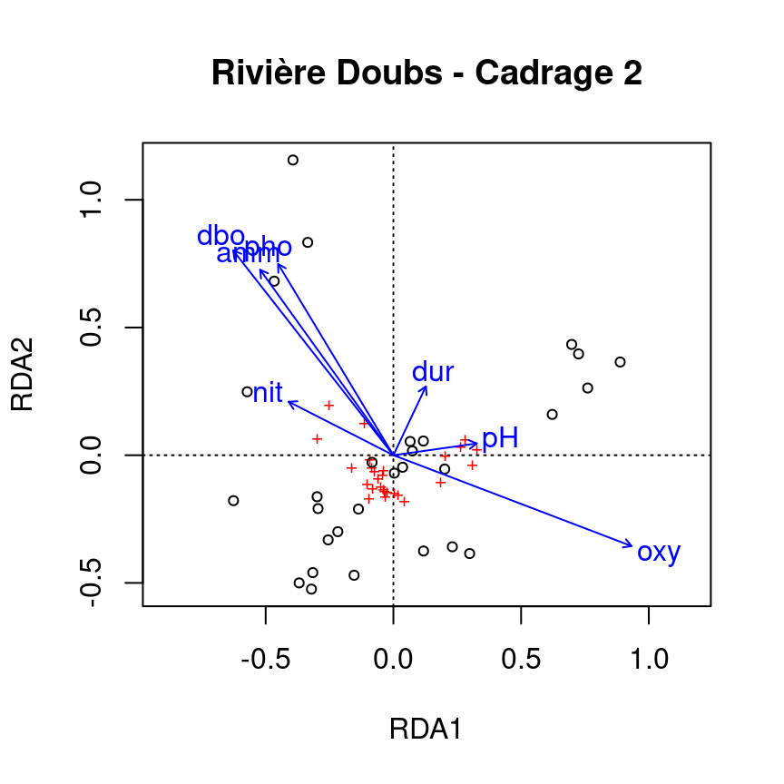

Chapitre 7 RDA partielle
La RDA partielle est un cas particulier de la RDA qui permet de tenir compte de covariables. En d’autres mots, on peut modéliser les effets linéaires de la matrice \(X\) sur la matrice \(Y\), tout en controllant pour l’effet d’une matrice de variables explicatives supplémentaires \(W\), appelées covariables (ou covariables). Comme dans la régression linéaire partielle, l’effet linéaire des variables \(X\) sur les variables \(Y\) est ajusté pour les effets des covariables \(W\). Pour cela, on effectue d’abord une RDA des covariables \(W\) sur les variables de réponse \(Y\). On extrait ensuite les résidus de ce RDA, c’est-à-dire une matrice \(Y_{res}|W\) contenant les variables réponses \(Y\) dans lesquelles l’effet de \(W\) a été retiré. La RDA partielle correspond à la RDA de \(X\) sur \(Y_{res}|W\). Toutes les statistiques présentées précédemment pour la RDA s’appliquent également à la RDA partielle.

Figure 7.1: The basic structure of a redundancy analysis (RDA).
La RDA partielle a plusieurs applications. C’est un outil puissant pour évaluer l’effet des variables environnementales sur la composition des espèces tout en tenant compte de la variation due à d’autres variables environnementales qui ne sont pas visées par l’étude. Un exemple courant de ceci en écologie des communautés est de tester l’importance des variables environnementales tout en contrôlant pour l’effet de l’espace. La RDA partielle peut également être utilisée pour contrôler des effets linéaires bien connus, ou pour isoler l’effet d’une seule variable explicative.
7.1 Exemple: RDA partielle sur les données Doubs
Dans R, on peut faire une RDA partielle avec la fonction rda(). Par exemple, évaluons l’effet de la chimie de l’eau sur l’abondance des poissons (spe.hel) en tenant compte de covariables topographiques.
# Divisez le tableau de données environnementales en deux:
# variables topographiques et chimiques
env.topo <- subset(env.z, select = c(alt, pen, deb))
env.chem <- subset(env.z, select = c(pH, dur, pho, nit, amm,
oxy, dbo))
# Faire la RDA partielle
spe.partial.rda <- rda(spe.hel, env.chem, env.topo)Note: On peut aussi utiliser une syntaxe de formule comme
Y ~ X + Condition(W), oùCondition()permet de tenir compete de covariables.
# Syntaxe alternative
spe.partial.rda <- rda(spe.hel ~ pH + dur + pho + nit + amm + oxy + dbo +
Condition(alt + pen + deb), # covariables ici
data = env.z)7.1.1 Interprétation de la sortie d’une RDA partielle
Le résultat d’une RDA partielle est très similaire à celui présenté dans la section précédente sur la RDA. La principale différence est que nous avons des covariables dans notre modèle, ce qui signifie que nous pouvons déterminer la proportion de la variation expliquée par ces variables supplémentaires, mais qui ne sont pas “intéressantes”. Encore une fois, la première section du résumé contient les éléments dont nous avons besoin pour vérifier la performance de notre RDA partielle.
...
## Partitioning of variance:
## Inertia Proportion
## Total 0.5025 1.0000
## Conditioned 0.2087 0.4153
## Constrained 0.1602 0.3189
## Unconstrained 0.1336 0.2659
...- Conditioned Proportion: variance de \(Y\) expliquée par \(W\) (41.53%)
- Constrained Proportion: variance de \(Y\) expliquée par \(X\) (31.89%)
- Unconstained Proportion: variance de \(Y\) non expliquée (26.59%)
Comment présenteriez-vous ces résultats? La chimie de l’eau explique 31.89% de l’abondance des espèces de poissons, tandis que la topographie explique 41.53% de la variation en abondances des poissons.
7.1.2 Tester la significativité
Comme pour le RDA, nous pouvons interpréter la signification de notre modèle à l’aide de deux informations clés.
- Quel est le pouvoir explicatif du modèle ?
## [1] 0.2413464- Est-ce que le modèle est significatif?
...
## Permutation test for rda under reduced model
## Number of permutations: 999
##
## Model: rda(X = spe.hel, Y = env.chem, Z = env.topo)
## Df Variance F Pr(>F)
## Model 7 0.16024 3.0842 0.001 ***
## Residual 18 0.13360
...Notre modèle explique 24.1% de la variation en abondance de poissons entre sites. Il est aussi statistiquement significatif (p = 0.001)!
7.1.3 Représentation graphique
On peut visualiser les effets des variables environnementales sur la communauté de poissons avec la fonction ordiplot().

Recall: Le cadrage de type 2 montre les effets des variables explicatives, donc de la matrice X sur la matrice Y une fois qu’on a controllé pour l’effet des covariables W.
Note: Les variables topographiques ne sont pas représentées. Pourquoi?
Le RDA partiel ne fait qu’ajuster les effets des variables explicatives en fonction des covariables. Les covariables ne sont pas d’intérêt, et ne sont donc pas représentées graphiquement.
7.2 Défi 2
Effectuez une RDA partielle de l’abondance des espèces de mites (mite.spe.hel) en fonction des variables environnementales, tenant compte de l’effet du substrat (SubsDens, WaterCont and Substrate).
* Quel pourcentage de variance est expliqué par les variables environnementales?
* Le modèle est-il significatif?
* Quels sont les axes significatifs?
Rappel des données et fonctions utiles:
7.2.1 Défi 2: Solution
Étape 1: Transformer et standardiser les données.
Nos données sont déjà transformés et standardisés!
Étape 2: Faire la RDA partielle:
mite.spe.subs <- rda(mite.spe.hel ~ Shrub + Topo + Condition(SubsDens +
WatrCont + Substrate), data = mite.env)
# Extraire les résultats
summary(mite.spe.subs)...
## Partitioning of variance:
## Inertia Proportion
## Total 0.39428 1.00000
## Conditioned 0.16891 0.42839
## Constrained 0.03868 0.09811
## Unconstrained 0.18669 0.47350
...Shrub et Topo expliquent 9.8% de la variation de l’abondance de mites, tandis que le substrat explique 42.8% de cette variation.
Étape 3: Interpréter les résultats!
- Quel pourcentage de variance est expliqué par les variables environnementales?
## [1] 0.08327533- Le modèle est-il significatif?
## Permutation test for rda under reduced model
## Permutation: free
## Number of permutations: 999
##
## Model: rda(formula = mite.spe.hel ~ Shrub + Topo + Condition(SubsDens + WatrCont + Substrate), data = mite.env)
## Df Variance F Pr(>F)
## Model 3 0.038683 4.006 0.001 ***
## Residual 58 0.186688
## ---
## Signif. codes: 0 '***' 0.001 '**' 0.01 '*' 0.05 '.' 0.1 ' ' 1- Quels axes sont significatifs?
## Permutation test for rda under reduced model
## Forward tests for axes
## Permutation: free
## Number of permutations: 999
##
## Model: rda(formula = mite.spe.hel ~ Shrub + Topo + Condition(SubsDens + WatrCont + Substrate), data = mite.env)
## Df Variance F Pr(>F)
## RDA1 1 0.027236 8.4618 0.001 ***
## RDA2 1 0.008254 2.5643 0.022 *
## RDA3 1 0.003193 0.9919 0.423
## Residual 58 0.186688
## ---
## Signif. codes: 0 '***' 0.001 '**' 0.01 '*' 0.05 '.' 0.1 ' ' 1Le \(R^2\) ajusté de la RDA globale est 8.33%, et est significatif (p = 0.001). Les variables environnementales expliquent 9.81% de la variance de la composition des espèces d’acariens entre les sites, tandis que les covariables du substrat expliquent 42.84% de cette variation. Cependant, 47.35% de la variation reste inexpliquée. Les deux premiers axes canoniques sont significatifs.